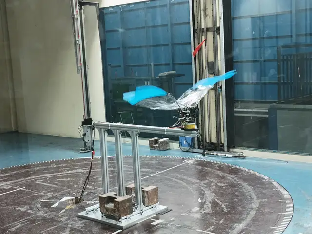
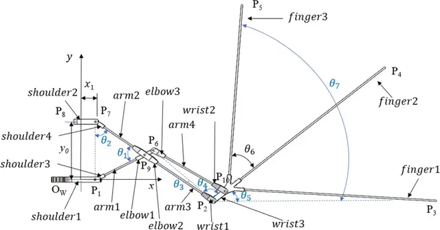
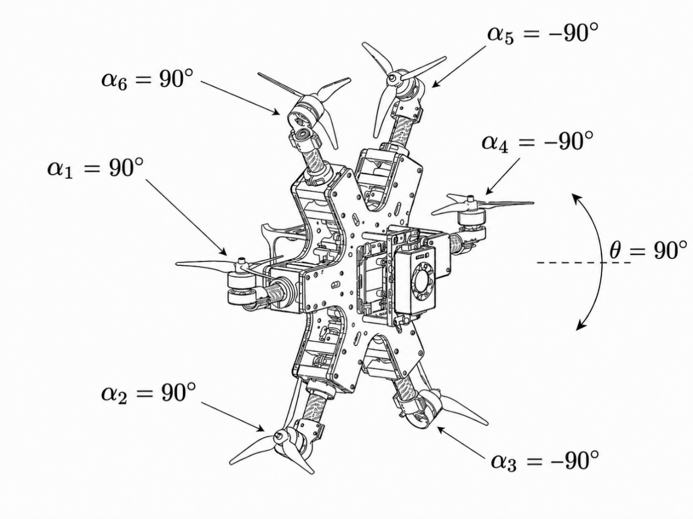
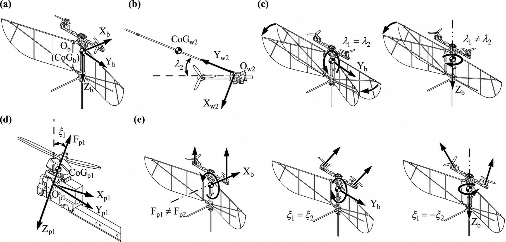
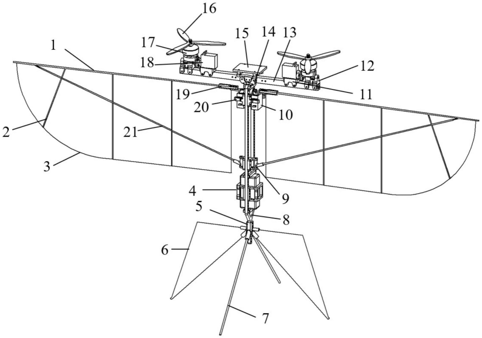
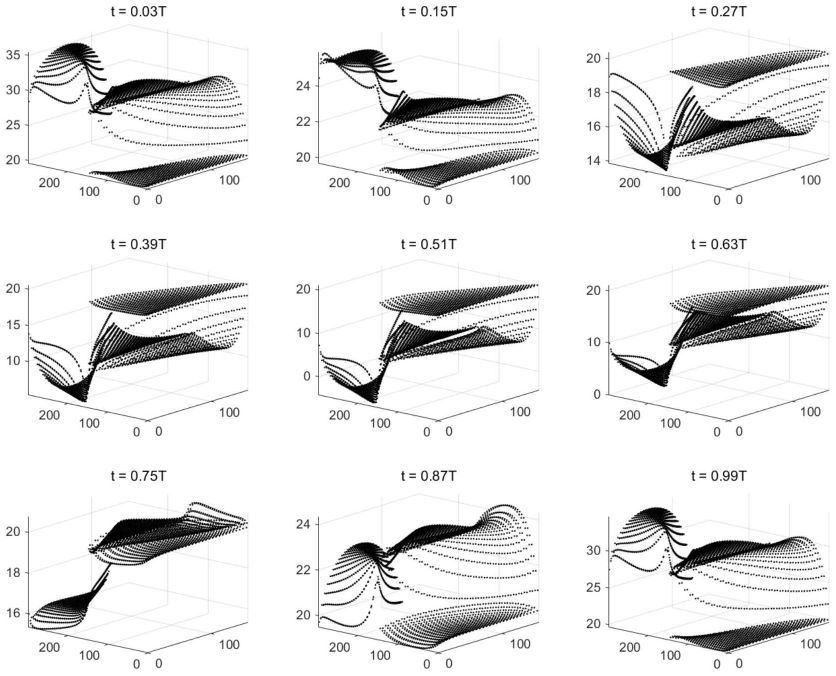
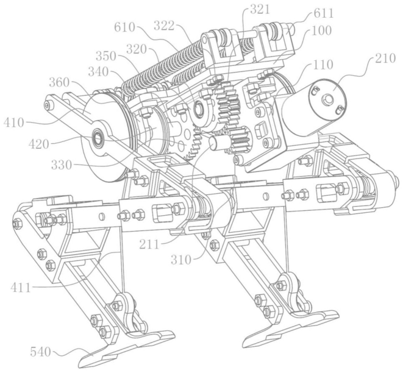
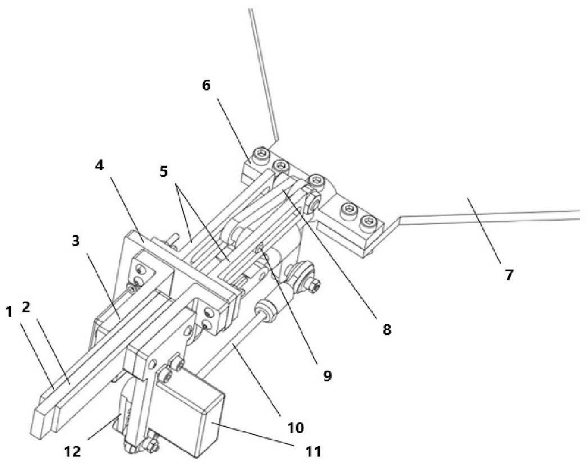

Mass-Adaptive Whole-Body Coordination for Rapid Post-Grasp Recovery in Aerial Manipulators
ICRA, 2027 · Submitted (awaiting review)
I am a PhD student at Harbin Institute of Technology, working at the State Key Laboratory of Robotics and Systems and the Sino-German Joint Laboratory for Space Robotics (Academician Hong Liu's research group).



图9 · 机体姿态角θ=90°时的倾转角组合工作状态
参考论文图2 · 黑白展示示意图
图1 · 扑旋混合驱动多模态飞行器整体结构示意图
图4 · 一个振翅周期内的相对攻角分布预测结果
图3 · 腿部机构处于屈腿储能状态的整体结构示意图
图1 · 尾翼俯仰与滚转机构的等轴侧结构示意图